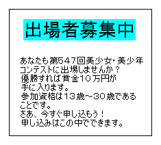

僕は町をぶらぶらとあるいてある場所に向かった。
その場所に着くとそこには——

というポスターがはってあった。
そう、僕はこのコンテストに出場するつもりなのだ。
前回も参加したが優勝できなかった。
今回は優勝したいがそのためには壁となる奴がいた……
僕の名前は平原勇太(ひらばら・ゆうた)という。川名(かわな)中学校に通う１年生だ。
学校での成績は中間くらい。まずまず勉強はできる。
……っと自己紹介が終わったとこでさっきの話に戻る。
さっきも言ったが僕はここ、葉山(はやま)劇場で開かれるコンテストに参加するつもりだ。
ともわれ僕は参加申し込みのため、中に入っていった。
中の様子は予想通りの人、人、人だ。とにかく申し込むため列に並ぶ。
数分後……
僕の番が回ってきた。僕は、前回と同じように申し込み用紙に名前と住所、電話番号を
用紙に書き込んだ。これで申し込み完了である。開催日は今月の３０日のようだ。
今日が５日なので、それまで３週間ほどある。その間にみっちり練習しなくては。
「お〜ほっほっほっほ〜。さあ、道を空けなさって」
！聞き覚えのある声がした。周りの人は中央の道を空けていく。
「あ〜ら。勇太おひさしぶりね〜」
「やっぱりあいつだ」と僕は思った。
「はいはい、そうだねー」
僕はそう言った。
「ここにいるってことはこりずにまたコンテストに出場なさるつもりなのかしら？」
「そうだよ。悪いか青海(あおみ)？」
ちなみに夢白青海(ゆめしろ・あおみ)は言葉遣いでもわかるように町のお嬢様だ。
そんでもって僕の同級生でもある。
「べつに。でもやめたほうがよろしいわよ」
「やだね。それにもう申し込んだし」
「そうでしたの。まあ、このワタシがいるかぎりあなたに優勝は無理ですわ」
「そんなのやってみないとわかんないよ」
「あ〜ら。じゃあ、いままでのコンテストの結果はどうなのかしら？」
「それは……」
僕はその後を続けられなかった。
「そう、いままでの１００人中７８位という結果でどうやって１位のワタシに勝つといいますの？」
「……」
僕は何も言えなかった。
「まあ、せいぜい恥をかかないよう努力することね」
青海の横に執事が一人来た。
「お嬢様そろそろお帰りのお時間です」
「わかったわ、セイベル」
青海はそう執事に言った。
「ではごきげんよう。お〜ほっほっほっほ〜」
青海は帰っていった。
「なにしに来たんだ？あいつ」と僕は思った。
まあ、コンテストの申し込みにきたのは間違いない。
だって、さっき青海の執事の一人が申し込み用紙を書いてたもん。
さて、どうしよう？たしかにこのままでは前回と同じような結果に終わってしまうかも。
何か手はないかなー？僕はそう考えながら家に帰った。
４日後……
「はぁ……」
僕はため息をついた。なぜならあれから青海に勝つ方法が見つからないからだ。
他の人には頑張れば勝てるかもしれないが青海はそうはいかない。
どうすれば青海に勝てるだろう？僕は考え始めた。
何か違う服を使ってアピールは？……やっても変わらない気がする。
ではすごいことをステージの上で？……いや、自慢できる芸がなかった。
ん〜思い切って女装？……恥ずかしいからだめ。
……ダメだ。いい考えが浮かんでこない。
「はぁぁ……」
僕は再びため息をついた。
それにしてもなんだか……眠くなってきた……おやすみ……
数分後……
「うーん。よく寝た」
僕はベットから起きた。すると近くにペンダントがあるのに気がついた。
「これ、僕のじゃないのになんであるの？」
僕はそう言った。まあ、とにかくペンダントを調べよう。
ペンダントの色はピンクで形は丸だった。
他に近くに紙があるのにも気がついた。その紙には、
☆ペンダントの使い方☆
１、まずは心を落ち着かせるべし。
２、ペンダントに集中すべし。
３、ペンダントをそっと持つべし。
４、いったん一呼吸すべし。
５、呪文を唱えるべし。
と書かれていた。呪文？なんて唱えればいいのかな？
僕は紙の裏も見てみた。すると、
呪文一覧
ディフト - ディフト〜で〜に変身する。
ノフェル - ディフトの効果を消す。
ストンク - 姿をしばらく消す。
というのが書かれていた。よし、ためしに一つ唱えてみよう。えっと……
まずは落ち着く。
「はー」
次に集中する。
「集中！」
ペンダントを持つ。
「……」
一呼吸する。
「ふー」
最後に呪文を唱える。
「ディフト！妖精になれ」
そう唱えたらペンダントが光輝くのがわかった。
そして、鏡を見ると……
「ほ、本当に変身した」
鏡に映った僕の姿は小さな妖精だった。
ちなみにペンダントは首からさげていて大きさも今の僕にぴったりになっている。
「つ、使えるかも？」
僕は鏡に映った自分の姿を見てそう言った。
２週間後……
僕はすっかりペンダントが気に入って出かけるときにいつも首にかけていた。
そして、ときには変身して出かけることもあった。
は！僕は遊んでいる場合じゃなかった。ああ、コンテストまであと１週間だよー(泣)。
とにかく練習をしよう(汗)。
でもペンダントで変身して出場すれば練習しなくても大丈夫かも。
じゃあ、何に変身しようかな？この際思い切って……
よし、変身しよう。いつも通りに落ち着いて……
「ディフト！可愛い女の子になれ」
そう唱えたらいつものようにペンダントが光輝いた。
そして、鏡を見ると……
「！」
鏡に映った僕の姿は白い半袖のブラウスに青いミニスカートの女の子だった。
「こ、これが僕？」
僕はやはりそうとしか言えなかった。
「か、可愛い〜」
こらなら青海に勝てるかも。
それに自分で自分を好きになりそう……ってなに言ってんだよ僕。
はっ！そういえば僕って？……やっぱり僕の胸は膨らんでいた。
そして、あるものがなかった。やはり完全に女の子になっていた。
ともわれこの姿で申し込まないとまずいな。
僕は葉山劇場に行って男の子としての申し込みを取り消して、
女の子として出場する手続きをとった。
１週間後のコンテスト当日……
僕は青海をステージの横にある準備所から見ている。
ここは今やっている人の３つ後の人までいるところだ。他の人は控え室にいる。
青海「皆さんごきげんよーう」
観客Ａ「うーん。やっぱり今回も青海お嬢様かな？」
観客Ｂ「そうよ。優勝は青海お嬢様に決まってるわ」
観客Ｃ「ん〜まだ決まるのは早いかと……」
観客Ｂ「なに？青海お嬢様に不満があるわけ？」
観客Ｃ「そうゆうわけじゃないよ」
観客Ｄ「まあまあまあ。けんかはよそうよ」
観客Ａ「そうだよ。せっかくのコンテストなのに」
観客Ｂ「それもそうね」
観客Ｅ「あっ、ほら次の人になりそうよ」
パチパチパチと拍手がされた。
次は僕の番だ。僕はステージに向かう。
僕はステージの中央に立った。
皆が僕に注目する。ドキ！ああ、そんなに見ないでよ〜(泣)。
ああ、顔が赤くなってきちゃった……(汗)
僕「は、はじめまして。僕……いや私は……ゆ、由美です」
観客Ａ「声も可愛いなー」
観客Ｅ「ほんとねー」
観客Ｃ「この子優勝するかも」
観客Ｂ「あ、それあたしも思ってたの」
観客Ｄ「確かに。青海お嬢様より可愛い……」
私「あの、そのっ……ゆ、由美をよろしくね♥」
私は赤くなりながら観客席にウィンクをした。
私はさらに顔を赤くした。
私「あ、ありがとうございます」
アナウンス「以上、平原由美さんでした」
パチパチパチと拍手がされた。
私……いや僕はステージから急いで降りた。
そして、控え室までダッシュした。
数分後……
僕は控え室についた。あーもう！心臓バクバクだよ〜(汗)。
ああ、でもあんなに注目されるなんて……(赤面)
でもこれで優勝できたらいいなー。そうしたら青海に自慢できる。
はっ！今は勇太でなく由美だった。自慢できないよ〜(泣)。
でも女装したってことにはできないし……
青海にペンダントのこと話すしかないかなー？
どうしよう？
１時間後……
表彰式が始まった。いよいよコンテストの優勝者が発表される。
ゴクッ！
一同「やっぱり」
青海「なぜ？なぜこのワタシがあの初めての出場した子に負けましたの？」
観客Ａ「それは青海お嬢様よりあの子が可愛かったからだよ」
観客Ｃ「そうそう」
観客Ｂ「あたしもそうおもうわ」
観客Ｄ「そうその通りです」
青海「ワタシのどこが可愛くないとおっしゃるの？」
観客Ｅ「青海お嬢様はちょっと気が強すぎるのよ」
観客Ｃ「そう、そこさえなければあの子といい勝負なんだけどな」
観客Ｄ「あとはファッションセンスかな？」
観客Ｂ「青海お嬢様も女の子らしくもっと可愛いのを着ればいいのに」
青海「ワタシの服が可愛くないですって？」
観客Ｅ「青海お嬢様はそういう派手な格好しかしてないでしょ？
だから、もっと普通の服を着たほうがいいと思うの」
青海「わかりましたわ。努力してみますわ」
観客Ａ「そのいきだ。青海お嬢様」
そんなやり取りを僕は優勝賞金を受け取るときに聞いた。
数週間後……
僕は公園で青海の特訓をしていた。
「待って、勇太」
「だらしないな青海」
「しょうがないでしょ。今までまともに運動なんかしたことないんだから」
「ま、お嬢様だもんな」
「もう」
コンテスト終了後、青海にペンダントのことを話した。
そうしたら「ワタシは普通の女の子になりたいですの。特訓して下さらない？」と言ったのだ。
僕はオッケーした。
そして、今はすっかりお嬢様言葉が抜けた青海が僕の前にいる。
「いくわよ、勇太」
「こい」
「おりゃー」
青海が走り出した。まだまだ僕より足は遅いが回を重ねるごとに確実に早くなってる。
運動しているときの青海は笑顔だった。その笑顔は少しづつ輝きを増していった。
(終わり)
〜あとがき〜
こんにちは。今回は一話完結の物語です。
やはりシリーズ物とはまた違った感じです。
簡単ですがこれであとがきを終わります。
□ 感想はこちらに □